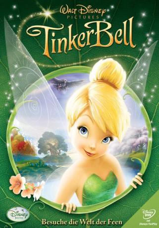

#962 TinkerBell 1
Alternativ: Tinker Bell
 
 IMDB-Wertung: 6.9 / 10
IMDB-Wertung: 6.9 / 10  Metascore: 0
Metascore: 0 
Hast Du dich je gefragt, wie die Natur ihren Glanz erhält? Wer ihr Licht und Farbe gibt und wie die Jahreszeiten kommen und gehen? Mach dich auf die Reise in das geheimnisvolle Tal der Feen und lerne die atmenberaubende Geschichte von Disneys berühmtester Dee kennen - in ihrem ersten eigenen Film "TinerBell". Besuche ein Land voller Abenteuer und Geheimnisse und erlebe, wie Tinkerbell zusammen mit Ihren vier Freundinnen und einem kleinen bisschen Feenstaub den Winter in Frühling verwandelt.
Jahr: 2008
Dauer: 78 Minuten
FSK:
Land: USA Studio: Walt Disney Studios Home EntertainmentTonspuren: DD5.1 - ,
Untertitel:
Auflösung: 1080p (1920x1080) Größe: 4464 MB
Genre: Animation/Trick, Abenteuer, Familie, Fantasy
Regisseur: Bradley Raymond
Drehbuch: Jeffrey M. Howard, Jeffrey M. Howard, Bradley Raymond, J.M. Barrie
Soundtrack: Joel McNeely
Darsteller:
Datei: X:\Kinder Disney HD\Tinkerbell\TinkerBell 1 (2008, FSK, 1920x1080).mkv seit 29.04.2015
Festplatte: Kinder-Filme+Trick
 Es gibt insgesamt 11 Filme in der Gruppe 'Kinder Disney HD\Tinkerbell'
Es gibt insgesamt 11 Filme in der Gruppe 'Kinder Disney HD\Tinkerbell'